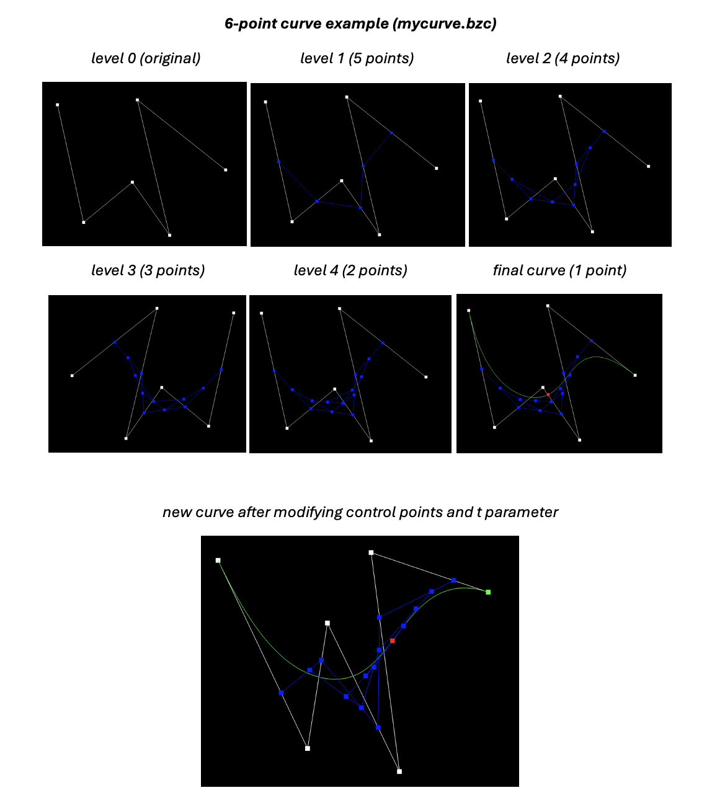
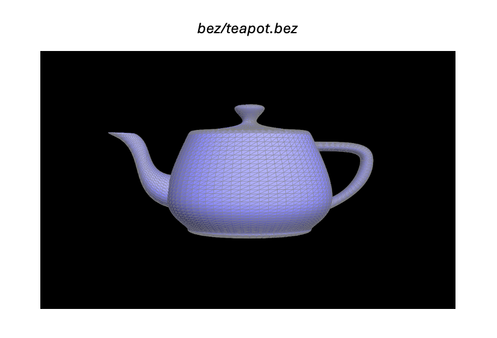
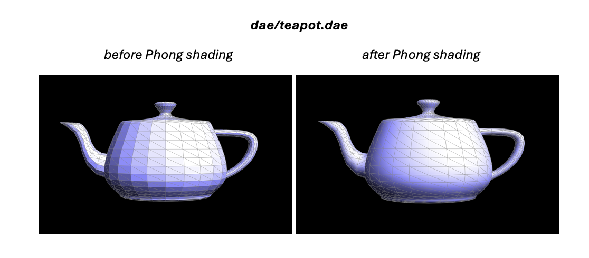
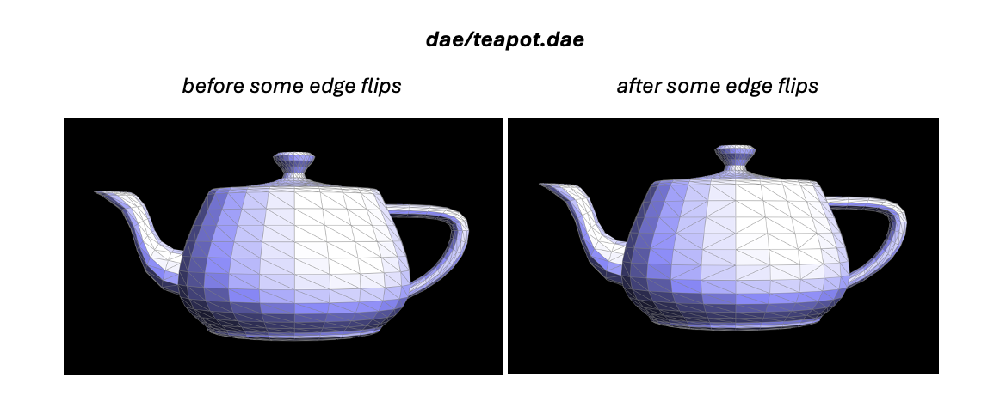
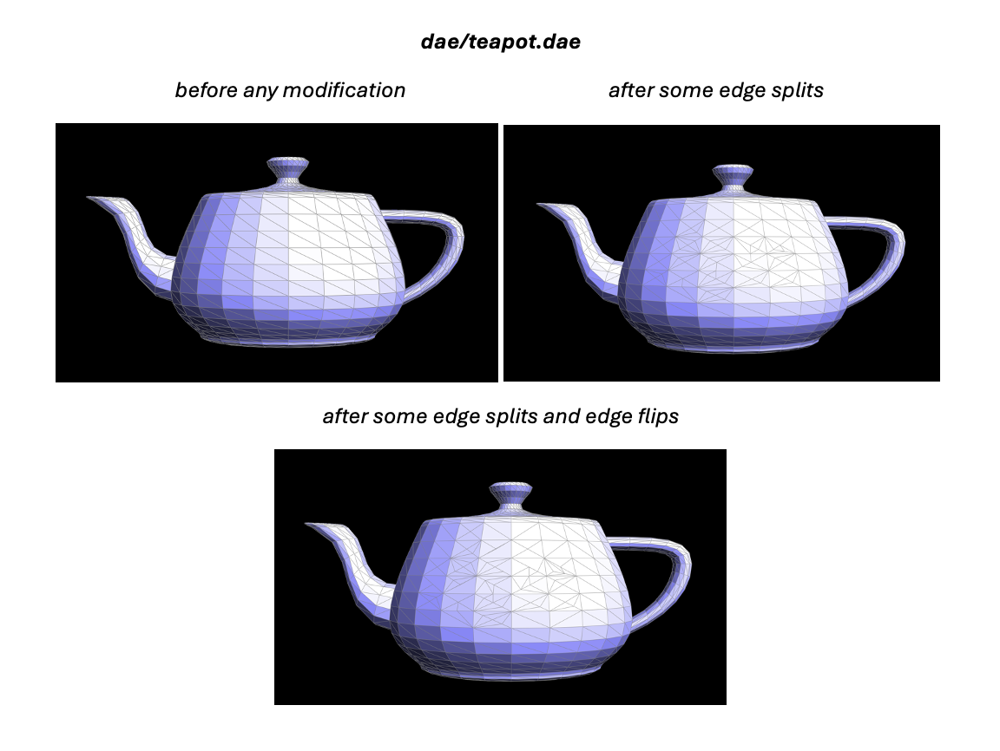
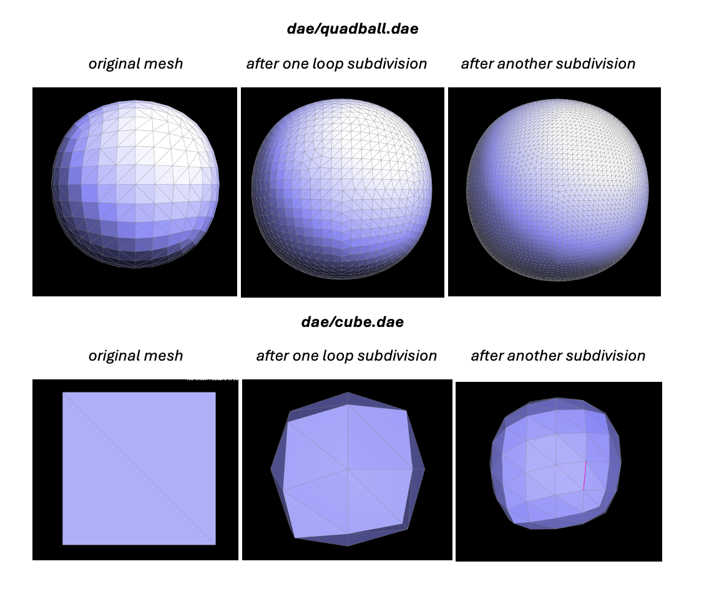
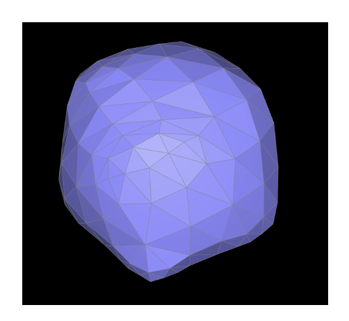

In this assignment, I explored a variety of techniques of displaying surfaces and manipulating geometric meshes. The project began by leveraging de Casteljau's algorithm to draw Bezier curves and surfaces. From there, I implemented area-weighted vertex normals, which is key for displaying the effect of light on surfaces through Phong shading. Lastly, I finished up by working with a half-edge mesh structure—first building out edge flip and edge split functionality and eventually progressing to loop subdivision. While this project was by no means easy, I was amazed by how clean and intuitive the half-edge data framework is. I found it very powerful in preserving local data, and making complex changes to the different meshes.
De Casteljau’s algorithm is a powerful tool for evaluating curves given a set of control points. Specifically, the algorithm recursively leverages linear interpolation across the line segments between control points to draw a smooth curve that is shaped and influenced by the control point locations. At each recursive step, we produce a new set of control points with one less than the previous set until we are eventually left with one point that is a part of our curve. Each point along the final curve is the result of this recursive process for a unique linear interpolation weight from 0 to 1. I implemented this by first defining a 2-D linear interpolation function. Then, I built the evaluation step, where I looped through an input set of control points and performed a linear interpolation between each point and the point next to it. This left me with a new set of intermediate control points that my function returned.
De Casteljau’s algorithm extends to 3-D surfaces by performing the recursive process over a 2-D grid of control points. In my implementation, I first iterated over one dimension of the control point matrix and, for each row, constructed a 2-D “control curve”. From there, I leveraged the columns of the control point matrix to draw in the third dimension across the 2-D control curves. Below is a teapot drawn with Bezier surfaces via de Casteljau’s algorithm.
I implemented the area-weighted vertex normals by creating a weighted normal function. This function is identical to the Face class’s normal function except it doesn’t normalize the cross product at the end. Because the triangle cross product is proportional to the face’s area, there was no need for me to explicitly calculate the area. With this helper, I iterated through the input vertex’s neighboring vertices and accumulated a weighted normal sum. Finally, I normalized and returned this sum vector.
To implement edge flips, I first checked if the input edge was a boundary and created half edge iterators for the edges along the triangles adjacent to our input edge. From there, I used the half edge setNeighbor function and the iterator variables to update the passed in edge, along with the outer edges. Here, I updated the next, twin, vertex, and face field as necessary based on the edge flip procedure. After this, I made sure to update the half edge field of the vertex and face objects accordingly, so all pointers ended up correct.
My debugging journey here was quite difficult. At first, I was running into a bug, where my code would run into an infinite loop and just stall instead of flipping the edge. This loop occurred after my entire method ran and returned, which made it even more confusing. I realized that this bug was because I created a new edge in the mesh instead of just updating the existing pointer. After I fixed this, I ran into another bug where whenever I tried to flip an edge, the two adjacent triangles would disappear. I eventually resorted to assigning variables for every edge and setting new neighbors for all of them as I described above. This ended up being the cleanest solution and working perfectly.
My implementation for edge splits was quite natural after edge flips. I started off by creating a new vertex positioned at the midpoint of the split edge. Then, I defined all the new cross edges created by the split. After this, I performed the appropriate half edge neighbor updates, along with the corresponding vertex and face pointer updates (similar to the process for edge flips but with the edge split transformation procedure). Finally, I set the isNew field to true for the newly created perpendicular edges. I also set a new field isSplit to true for all four cross edges. These two updates proved handy for loop subdivision in part 6.
My debugging journey was quite interesting for this part as well. At first, I thought that it was working perfectly but found an infinite loop bug that only popped up when I did a combination of multi-layer edge splitting and normal vector averaging. I fixed this by re-using the input edge pointer and not creating a new edge. I also ran into an issue when making multiple splits in a close area, such as in loop subdivision. When I did this, a triangle (that isn't connected to the final split edge) would lose its color. I fixed this bug by making sure to update the face pointer of the outer half edges that seemingly weren’t affected by the edge split.
I implemented loop subdivision by first resetting all edges in the mesh to an isSplit value of false and marking all vertices as original to the mesh. As I marked the vertices, I also calculated and stored their new post-subdivision position. Next, I computed the positions for the newly created split edge vertices. After calculating all the new positions, I split all of the edges in the mesh, making sure to not split any edges multiple times. Then, I flipped the appropriate edges and finally updated the original vertex positions.
As evident above, loop subdivision and upsampling increasingly smooths out sharp edges and corners. However, below I pre-processed dae/cube.dae by splitting some of the edges in the sharp parts of the mesh before performing the final loop subdivision. In the image, it is noticeable that the sharp areas (at the bottom) that had manual splits performed before subdivision maintain some of their sharp protrusion, especially in comparison to the last image above.
As the cube is subdivided many times, it begins picking up asymmetries. The poles of the sphere-like shape become a bit tilted and there is a minor smoothed out protrusion at opposite ends. I found that performing edge flips at asymmetric areas before performing loop subdivision could be one potential way for increasing symmetry. I believe that this is due to the flips alleviating some of the local differences in position.